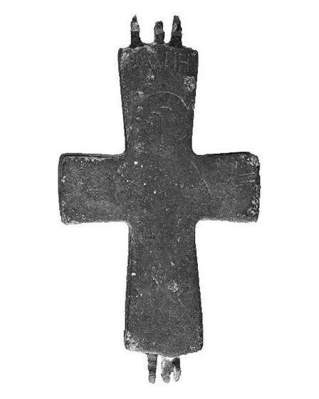
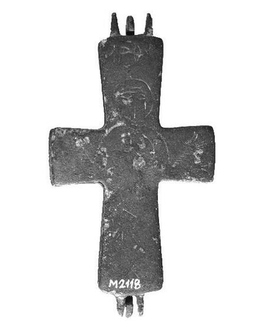

Catalog › CE-0290 · HPM2023-2
Encolpion bivalv de bronz, cat. 2, Muzeul Halûk Perk
sec. XI (1001–1100) · loc necunoscut · Muzeul Halûk Perk (Halûk Perk Müzesi), Istanbul, Turcia, inv. HPM 2118
double-sided reliquary cross (enkolpion), bronz; c. XI (1001–1100); find spot unknown; kept at Muzeul Halûk Perk (Halûk Perk Müzesi), Istanbul, Turcia.




Identificare
- Categorie
- Encolpion bivalv (relicvar)
- Material
- Bronz
- Tehnică
- Gravare (incizie)
- Stare
- Fragmentară
- Dimensiuni
- Î 76 × L 41 × Gr 7 mm
Iconografie
- Avers
- Sf. Ioan
- Descriere avers
- Sfântul Ioan în picioare, în întreaga înălțime, din față, în poziție de orant; deasupra capului inscripția HOANHC. Din cauza coroziunii, trăsăturile și detaliile veșmântului sunt șterse.
- Revers
- Maica Domnului Orantă; Maica Domnului cu Pruncul
- Descriere revers
- Maica Domnului în picioare, în întreaga înălțime, din față, în poziție de orant, cu Pruncul din față la nivelul pieptului (în întreaga înălțime, cu semn de întrebare la autor); la capătul brațului de sus inscripția MP ΘV. Detaliile liniare ale veșmintelor sunt șterse de coroziune.
- Inscripții
- HOANHC [Ηοανης]; MP ΘV [Μ(ήτή)ρ Θ(εο)ύ]
- Limba
- Greacă
Datare și atribuire
- Datare
- sec. XI (1001–1100)
- Centru
- Necunoscut
- Tipologie
- Pitarakis 2006, forma tip I; Ünal–Çakmakçı 2023, tip 1/a
Descoperire
- Context
- Colecție (fără context)
- Coordonate
- 41.0565° N, 29.0506° E
- Precizia locului
- Loc de păstrare (loc de descoperire incert)
Păstrare și referințe
- Colecție
- Muzeul Halûk Perk (Halûk Perk Müzesi), Istanbul, Turcia
- Nr. inventar
- HPM 2118
- Bibliografie
- C. Ünal, Z. Çakmakçı, Halûk Perk Müzesi’nden Meryem ve Çocuk İsa Betimli Bir Grup Röliker Haçın İkonografik Bakımdan Değerlendirilmesi, „Art-Sanat”, 20, 2023, p. 667–701 [Ünal–Çakmakçı 2023], p. 684, cat. nr. 2, reprodusă la G. 2 (p. 684). DOI: 10.26650/artsanat.2023.20.1289947. Acces liber (CC BY-NC 4.0).
- Figura
- G. 2
- Planșe
- Ünal–Çakmakçı 2023, p. 684
- Analogii
- Pitarakis 2006, cat. 304, 337; Altun 2015, p. 304, lev. 7/15
- Observații
- Datare după Ünal și Çakmakçı: sec. XI. Dimensiuni date în sursă (cm): înălțime cu balamalele 7.6, înălțimea crucii 6.4, lățime 4.1, grosime 0.7. Balamalele sunt parțial rupte; coroziune puternică pe suprafață, care a șters în parte reprezentările. Pe fotografie se vede o etichetă cu numărul de inventar. Locul descoperirii nu e cunoscut cu precizie; punctul de pe hartă marchează locul de păstrare (Muzeul Halûk Perk), nu locul descoperirii. Coordonate: nu sunt date în sursă.
Citare: Corpus Encolpiorum, CE-0290, Encolpion bivalv de bronz, cat. 2, Muzeul Halûk Perk, https://vitaliejosanu1979-ux.github.io/primul-meu-proiect/piese/HPM2023-2/ (accesat 2026-10-17).